Nozioni base da sapere
- Presentazione foglio di calcolo
- Alcuni comandi base
- Tipi di formati
- Alcune funzioni base
- Shortcut
Presentazione foglio di calcolo
In questa lezione si illustrano le caratteristiche della finestra di Excel:
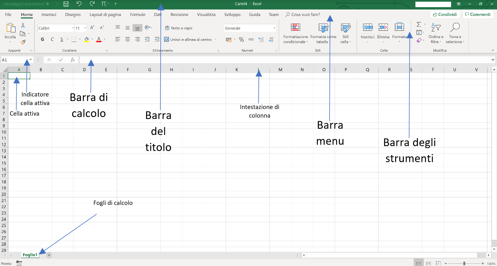
Per modificare l'aspetto del testo di una cella o introdurre i bordi delle celle è necessario selezionare la parte interessata e usare gli strumenti che excel offre selezionando nella barra del menu "Home":
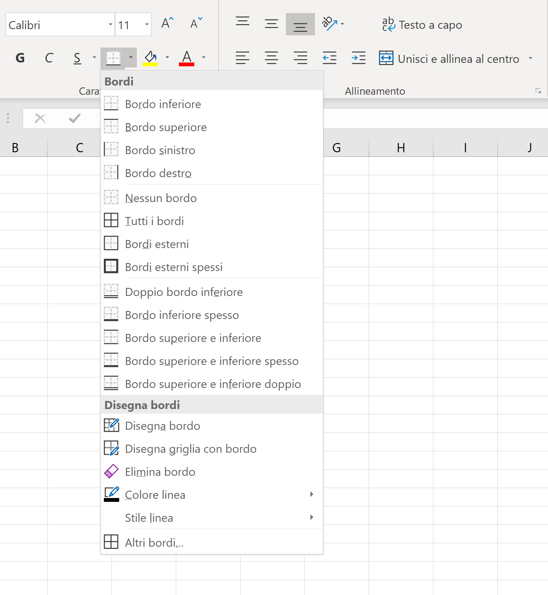
Sempre nella sezione "Home" excel offre degli strumenti automatici per formattare dei dati come tabelle:
Formatta come tabela
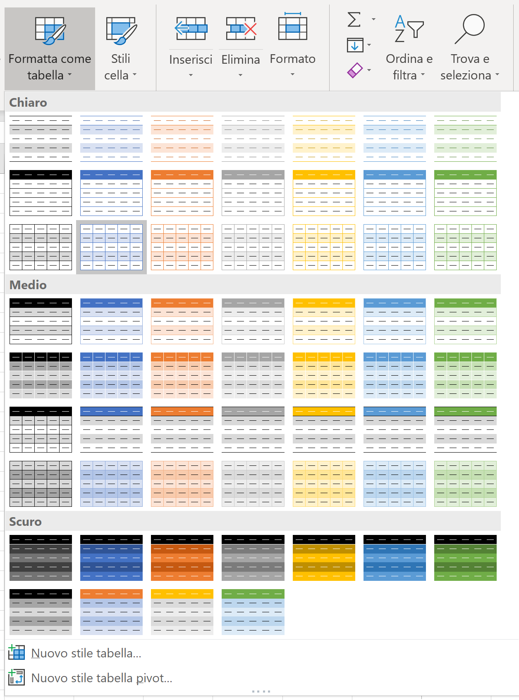
Stili cella
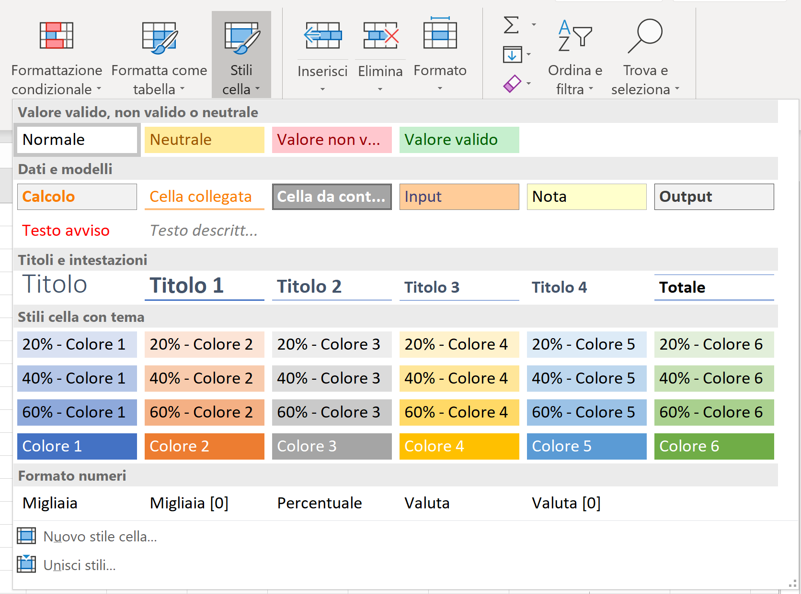
Alcuni comandi base
Salvare, aprire e stampare
Per salvare aprire o stampare un file excel selezioniamo nella barra del menu file per procedere con le procedure guidate nel fare queste operazioni:
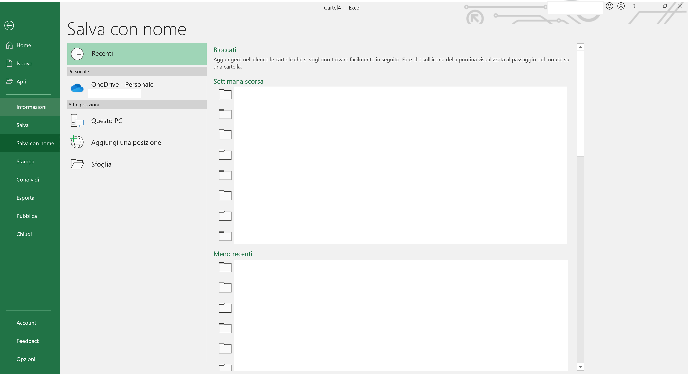
N.B. Per stampare una specifica parte di un foglio di calcolo dobbiamo selezionare la celle della parte che vogliamo stampare, andare su "Layout di pagina" nella barra del menu e tra gli strumenti cercare "imposta area di stampa", una volta selezionata la area di stampa si può modificare la visione della pagina nel foglio di stampa sfruttando gli strumento nella sezione "Adatta alla pagina":
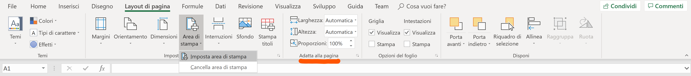
Tipi di formati
Per selezionare un tipo di formato di una cella, colonna o riga occorre selezionare la parte interessata e andare su "Home" e modificando il formato:
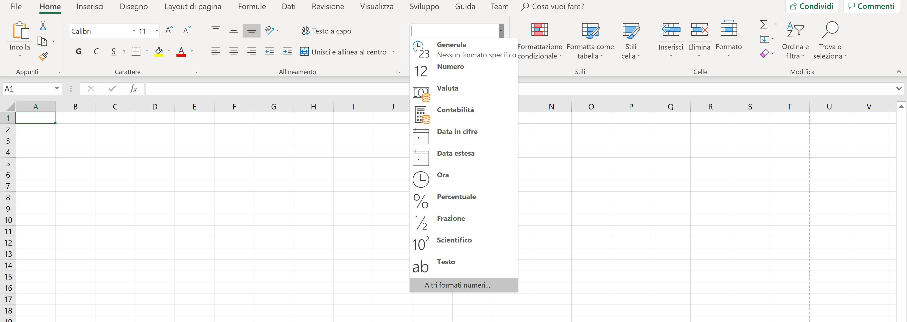
Cliccando sopra "altri formati numeri" si possono selezionare altri formati o differenti varianti di formati:
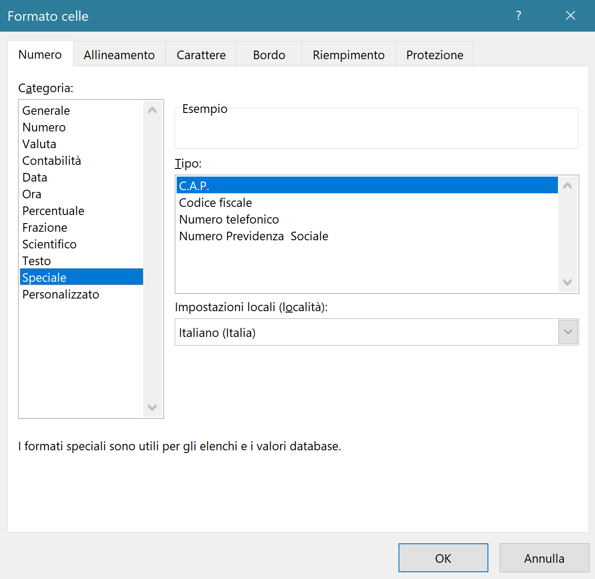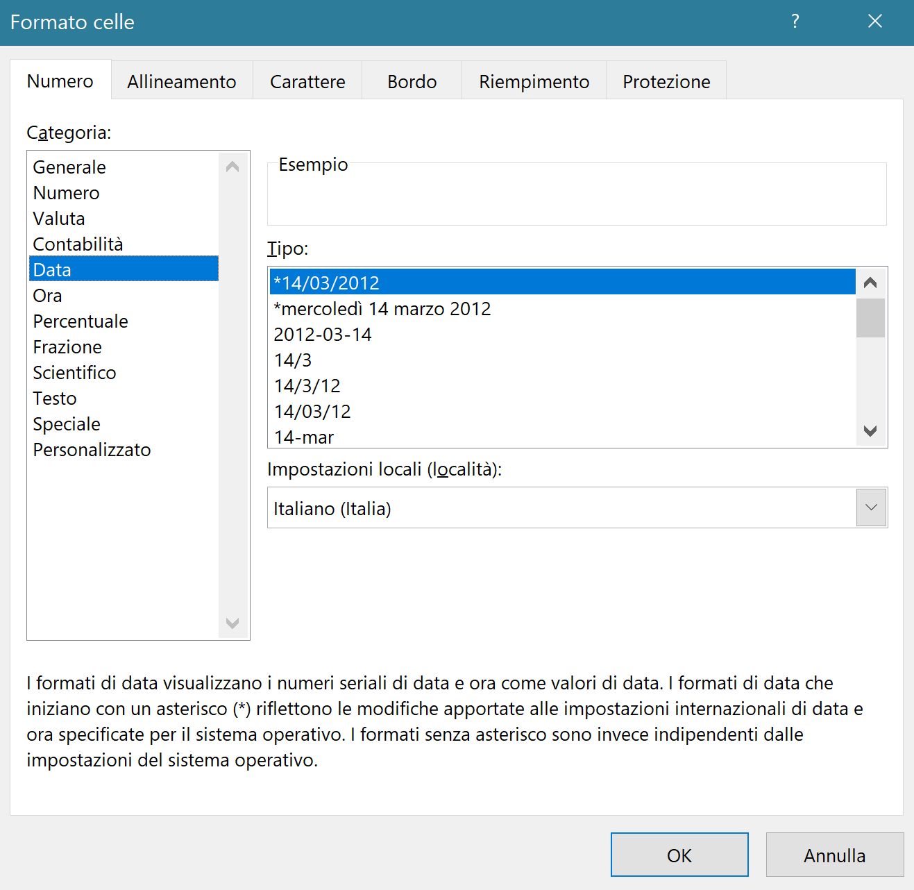
Alcune funzioni base
Operazioni matematiche con excel
Se una formula contiene un errore, Excel mostra #NomeErrore. Gli errori possono essere utili perché indicano che qualcosa non funziona correttamente, ma possono essere difficili da risolvere. Per fortuna ci sono diverse opzioni che facilitano l'individuazione dell'origine dell'errore e la relativa correzione.
- La funzione SOMMA serve per sommare gli elementi selezionati.
- La funzione MEDIA serve per fare la media degli elementi selezionati.
- La funzione MIN/MAX serve per sapere quale è il minimo o il massimo tra gli elementi selezionati.
- La funzione CONCAT/CONCATENA serve unire in un unica stringa due celle con un formato testo.
- Operazioni veloci:
- Utilizzo + , - , *, / risppettivamente per sommare, sottrarre, moltiplicare e dividere due valori in una cella.
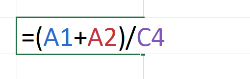
- Utilizzo il simbolo della e commerciale (&), che puoi inserire con MAIUSC+6 per unire il tensto presente in celle diverse.
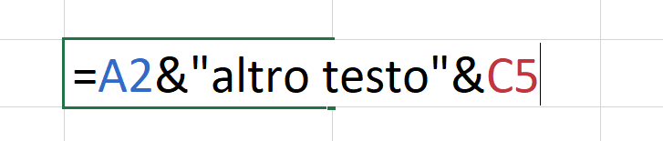
Gli errori nelle formule
Se una formula contiene un errore, Excel mostra #NomeErrore. Gli errori possono essere utili perché indicano che qualcosa non funziona correttamente, ma possono essere difficili da risolvere. Per fortuna ci sono diverse opzioni che facilitano l'individuazione dell'origine dell'errore e la relativa correzione.
- Il codice di errore #NOME? fa riferimento al nome di una funzione che non esiste o che risulta sbagliata.
- Il codice di errore #N/D indica che un valore non è disponibile per una data Funzione o per una Formula.
- Il codice di errore #VALORE! indica che la formula include operatori o argomenti errati.
- Il codice di errore #RIF! segnala che non è possibile individuare la cella che è stata indicata come argomento all'interno di una formula o di una funzione.
- Il codice di errore #DIV/0! viene visualizzato quando un numero viene diviso per zero o quando un numero viene diviso per una cella che non contiene valori.
- Il codice di errore #NUM! viene visualizzato quando un numero viene utilizzato in modo improprio all'interno di una formula.
- Il codice di errore #NULL! viene visualizzato quando in una formula viene espresso un operatore di intervallo errato.
- Il codice di errore ###### è generato quando la dimensione di una colonna non è sufficiente per evidenziare l'intero valore numerico (questo non è propriamente un errore ma basta allargare la dimensione della colonna corrispondente alla cella dove si trova l'errore).
N.B. applicare le funzione ad una colonna di dati
Se per una colonna devo applicare la stessa funzione non occorre riscriverla tutte le volte ma excel offre una soluzione migliore:
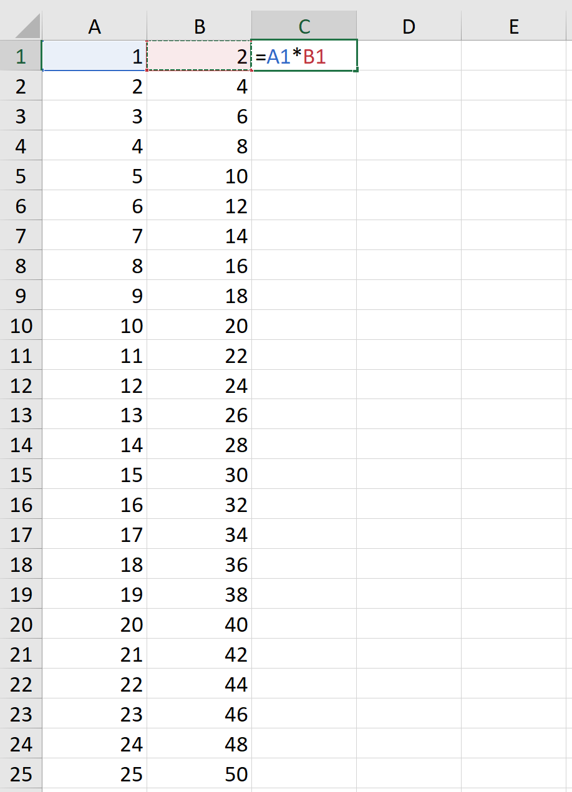
Ho due opzioni:
La prima consiste nel puntare il puntatore del mouse dove c'è il punto arancione nell'immagine poi cliccare e trascinare giù
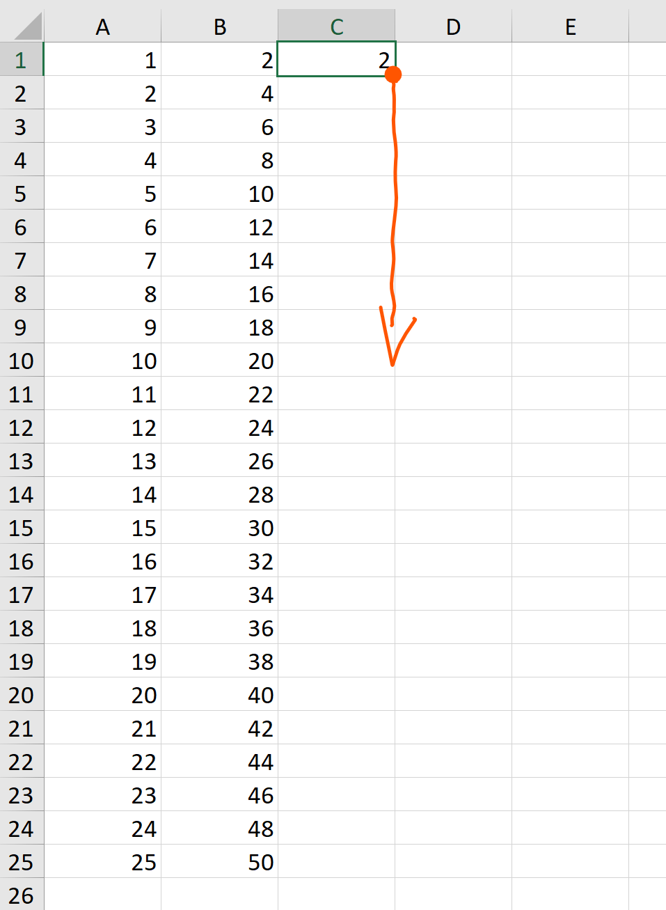
La seconda consiste nel puntare il puntatore del mouse dove c'è il punto arancione nell'immagine e cliccare due volte
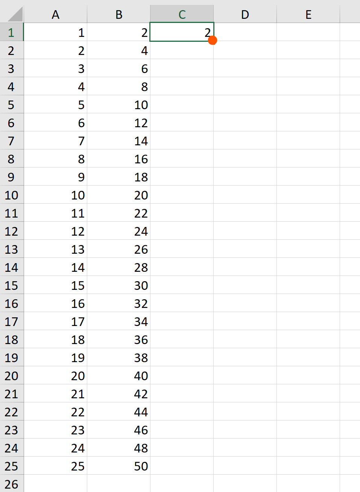
Il risultato non cambia ed è:
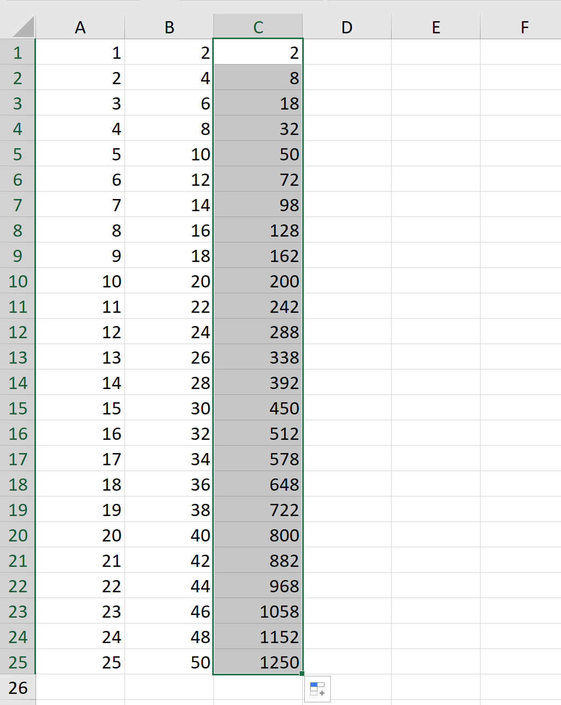
Shortcut
Per aprire ciascuno dei menu disponibili, si possono utilizzare anche le seguenti combinazioni di tasti, dette anche tasti Shortcut:
- Alt più F per il menu File;
- Alt più H per il menu Home;
- Alt più C per il menu Inserisci;
- Alt più P per il menu Layout di pagina;
- Alt più U per il menu Formule;
- Alt più A per il menu Dati;
- Alt più R per il menu Revisione;
- Alt più N per il menu Visualizza;
- Alt più E per il menu Guida, raggiungibile anche premendo il tasto F1.
Shortcut nel foglio di calcolo:
- Ctrl+A Seziona tutti in contenuti in una tabella.
- Ctrl+B Sbarra il testo delle celle selezionate.
- Ctrl+C Copia le celle selezionate.
- Ctrl+F Trova.
- Ctrl+G Metti il testo selezionato in corsivo.
- Ctrl+H Trova e sostituisci.
- Ctrl+I Metti il testo nelle celle selezionate in corsivo.
- Ctrl+N Crea un nuovo documento vuoto.
- Ctrl+O Apri un documento nel computer.
- Ctrl+P Stampa il documento.
- Ctrl+S Salva il documento.
- Ctrl+T Creare una tabella con la formattazione in automatico.
- Ctrl+U Sottolinea il testo nelle celle selezionate.
- Ctrl+V Incolla le celle copiate.
- Ctrl+X Taglia le/a celle/a selezionate.
- Ctrl+Y Ripeti l'ultima azione cancellata.
- Ctrl+Z Cancella l'ultima azione.
Shortcut per selezionare o muoversi nel foglio di calcolo:
Per muoversi nel foglio di calcolo ci sono alcuni "trucchi" che possono far perdere meno tempo nel selezionare più celle:
- Ctrl+frecce con questo comando mi sposto alla fine della tabella nella direzione che impongo con le frecce
- Shift+frecce con questo comando mi sposto tra le celle selezionando le celle nella direzione che impongo con le frecce
- Ctrl+Shift+frecce con questo comando mi sposto alla fine della tabella nella direzione che impongo con le frecce selezionando tutte le celle dalla cella di partenza.